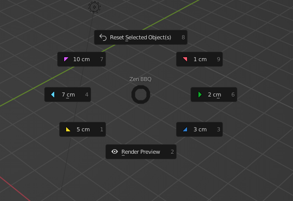
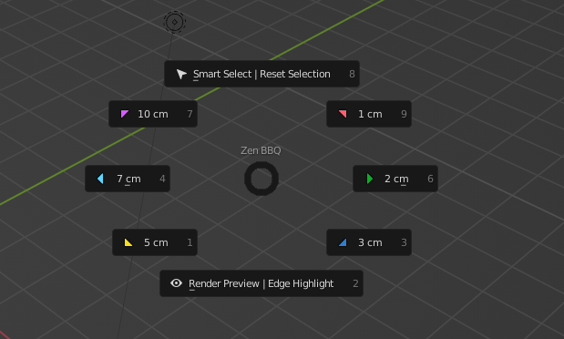

Pie Menu
The Pie Menu is called with default hotkey CTRL+SHIFT+X.
It is intended to get access to the most used functions of the Zen BBQ add-on more quickly.
Pie Menu in Object Mode

Reset Selected Object(s)
Resets the selected objects to their default state, before Zen BBQ was used on them.
Same as in N-panel
Colored Triangles
Assign the corresponding bevel preset from the N-Panel to the selection, see Quick Start Guide
Render Preview
Toggles Render Preview mode, see Quick Start Guide
Pie Menu in Mesh Edit Mode

Smart Select | Reset Selection
- Just click: Smart Select, see Quick Start Guide
- Ctrl + click: Reset Selection, same as in N-panel
Colored Triangles
Assign the corresponding bevel preset from the N-Panel to the selection, see Quick Start Guide
Render Preview | Reset Selection
- Just click: Render Preview toggle, see Quick Start Guide
- Ctrl + click: Highlight Bevels toggle, same as in N-panel
Zen Team reminds you that everyday usage of Zen Add-ons not only saves your time, but also charges your models in Blender for dollars, happiness, and long storage of vegetables!